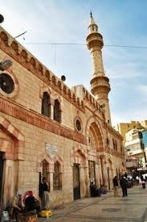
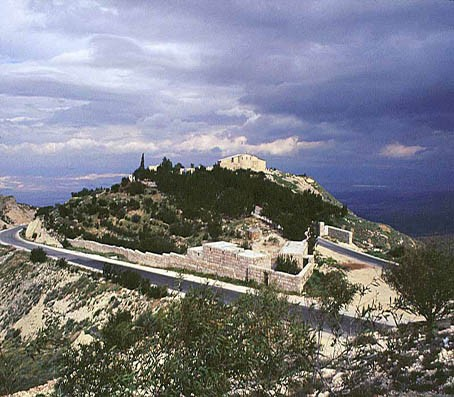
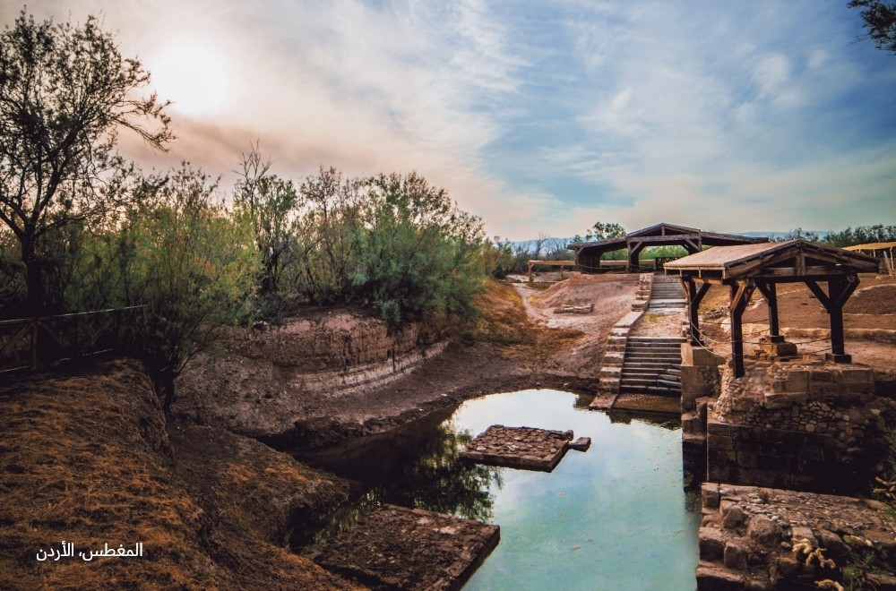
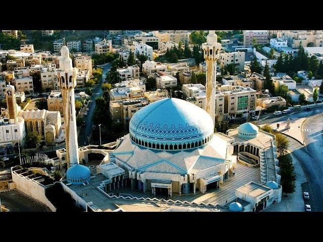

Hotels |
HomePage |
Hike
Religious Tourism in Jordan
Discover the Spiritual Heritage of Jordan: A Journey Through Sacred Sites and History




Important Religious Sites in Jordan
- Al-Husseini Mosque (Amman)- one of the largest and most important mosques in the capital, known for its Ottoman-style architecture and central location in downtown Amman.
- Mount Nebo- a sacred site believed to be where Prophet Moses viewed the Promised Land, offering panoramic views over the Jordan Valley.
- Baptism Site (Bethany Beyond the Jordan)- the recognized place where Jesus Christ was baptized by John the Baptist, and a major pilgrimage destination.
- King Abdullah I Mosque- a landmark mosque in Amman distinguished by its blue dome and open space for worship and reflection.